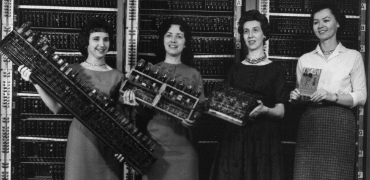

Women and Computer Science

Picture obtained from Mike Muuss's collection of historic computer images.
On-line writings about women and computer science include:
- Women Undergraduate Enrollment in
Electrical Engineering and Computer Science
at MIT (Final Report of the EECS Women Undergraduate
Enrollment Committee)
- Leveson,
Nancy. Educational Pipeline Issues for Women. Computing
Research News, October 1990 and January 1991.
- Pearl, Amy, Martha E. Pollack,
Eve Riskin, Becky Thomas, Elizabeth Wolf, and Alice Wu. Becoming a Computer Scientist. Communications of the ACM, 33(11) (November 1990).
- Frenkel, Karen A. Women
and computing. Communications of the ACM, 33(11)
(November 1990).
- Strok, Dale. Women in AI. IEEE
Expert, 7(4) (August 1992).
- Cottrell, Janet. I'm a Stranger Here Myself: A Consideration of Women and Computing (PDF).
- My writings on women and computer science:
- The history of women in computing
Other material on-line about women and computing:
Women and Men in Academia and Computer Science
Miscellaneous
See also my page on women and minorities in science and engineering.
Please send in additions, corrections, and suggestions.
Copyright 1994-1998 by Ellen Spertus (spertus@mills.edu).